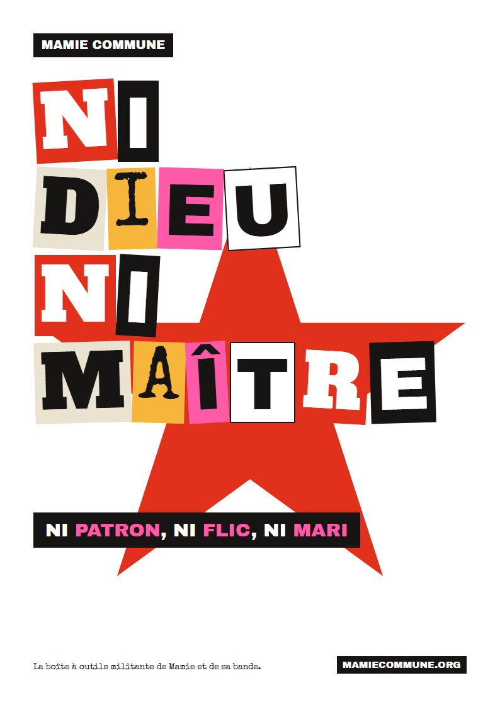
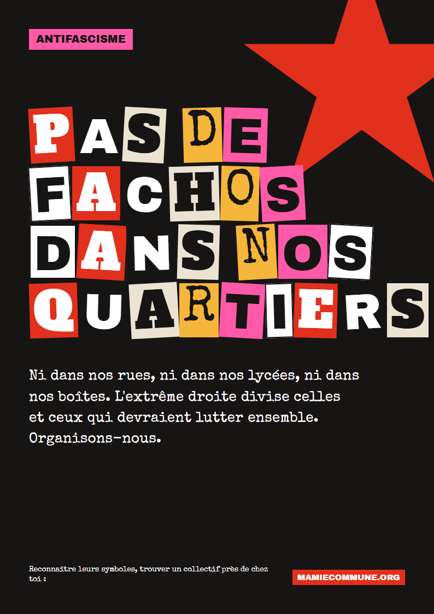
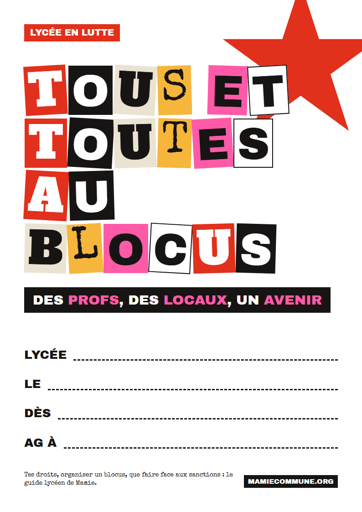
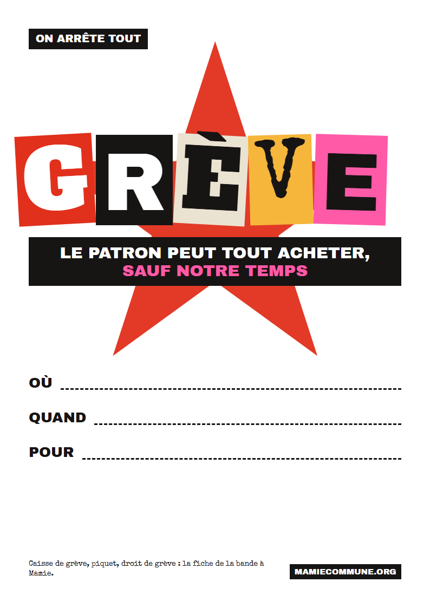
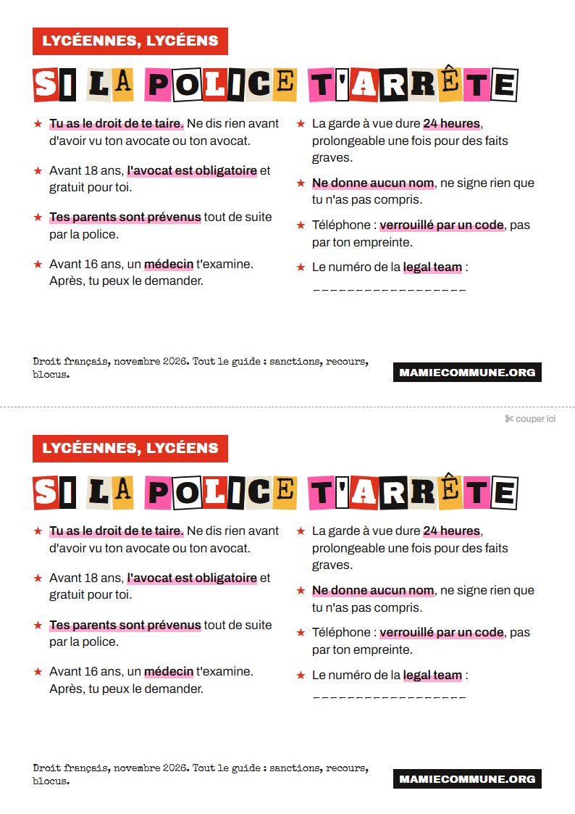
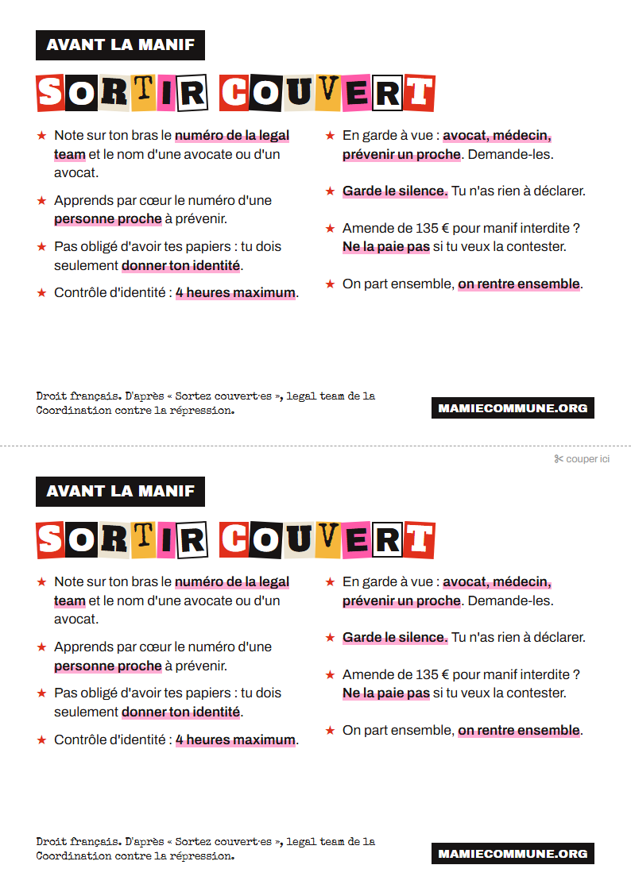

Mamie a passé des nuits entières à tirer des affiches à l'encre qui bave. Toi, tu as une imprimante, ou une photocopieuse au boulot, au lycée ou à la médiathèque. La bande a fait ces affiches et ces tracts à la main, dans le style des vidéos de Mamie, pour que tu n'aies plus qu'à imprimer, remplir et coller. Libres de reproduction : imprime, photocopie, fais tourner.
Les affiches
Format A4, fond blanc pour économiser l'encre. Elles s'agrandissent en A3 sans perdre en qualité : choisis « ajuster à la page » à l'impression. Celles qui ont des pointillés se remplissent au feutre.




Les tracts de poche
Deux tracts par feuille A4, à couper en deux. Assez petits pour une poche ou une coque de téléphone, et faits pour être distribués devant un lycée ou au départ d'une manif.


Pour coller, relis la fiche Coller des affiches : où c'est autorisé, la colle à la farine, et comment ne pas se faire prendre. Pour distribuer devant un lycée, voir Lutter au lycée.
À toi de faire les tiennes
- Garde les codes de Mamie : lettres découpées dans des magazines, étoile rouge, bandes noires avec un mot en rose. Ciseaux, colle et photocopieuse suffisent.
- Un message, pas dix : un titre qui se lit de loin, une date, un lieu. Conseils complets dans Faire un tract qu'on a envie de lire.
- Tu as fait une affiche dont tu es fière ou fier ? Envoie-la à la bande : elle pourrait rejoindre cette page. Voir Rejoins la bande.
Sources et pour aller plus loin
Lire aussi
- La sérigraphie à la maisonPour tirer tes affiches en couleur, à la main.
- Tes droits en manifD'où viennent les conseils des tracts.
Affiches et tracts conçus par la bande à Mamie, sans intelligence artificielle. Libres de reproduction.
À lire aussi · Faire passer le message
- Faire un tract qu'on a envie de lireUn message, un titre qui claque, un appel à agir, les mentions à ne pas oublier, et comment le distribuer sans finir à la poubelle.
- La sérigraphie à la maisonImprimer soi-même des affiches, des tee-shirts et des banderoles : le principe, le matériel, trois façons de faire son écran, et les ateliers où apprendre.